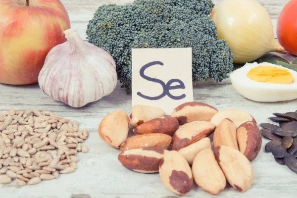
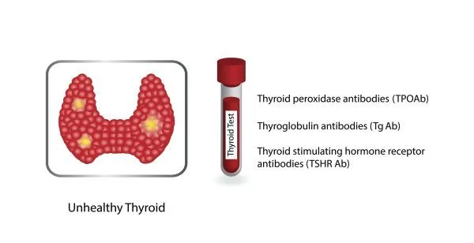

甲狀腺的飲食地雷
2026-07-25
甲狀腺的五種飲食地雷包括麩質、乳製品、精製碳水、酒精與咖啡因，橋本氏患者可優先排除麩質和乳製品並觀察 8 到 12 週。

16 篇文章
甲狀腺的五種飲食地雷包括麩質、乳製品、精製碳水、酒精與咖啡因，橋本氏患者可優先排除麩質和乳製品並觀察 8 到 12 週。

現代人體溫比19世紀下降約0.59°C，反映感染率降低、恆溫環境普及與身體活動量持續減少。

甲狀腺結節常見且多數良性，但應根據超音波特徵、大小與症狀進行分層評估，必要時進行細針抽吸確認。

作者說明對已改善胰島素阻抗的人，長期極低碳水可能影響甲狀腺素轉換並加重壓力荷爾蒙負擔，建議用循環式碳水飲食運用碳水。

硒是甲狀腺T4轉成T3的關鍵礦物質，作者建議適量補充並可由巴西堅果攝取，過量可能慢性中毒，成人上限為每天400微克。

甲狀腺功能低下和亢進皆可導致胰島素阻抗，研究顯示兩者的HOMA-IR值顯著高於正常人，提示需評估胰島素阻抗風險。

反轉T3（RT3）會佔據T3的位置，使甲狀腺症狀在抽血數據看似正常時仍持續，作者建議甲狀腺低下或補充後無改善者檢驗RT3。

甲狀腺低下患者應避免過度減少熱量、進行高強度運動、極端限制碳水，應選擇正確飲食和適合的運動方式才能有效減重。

鋅與硒是T4轉化為T3的關鍵營養素，腸道與肝臟健康對T3生成至關重要，應監測反向T3水平。

甲狀腺腫大主要源於碘缺乏與甲狀腺腫素過量攝取，十字花科蔬菜和大豆等食物含有甲狀腺腫素，碘攝取充足的人可適量食用。

降低甲狀腺抗體需調整飲食避開麩質乳製品，補充硒每天100至200微克可降低TPO抗體約40%，搭配Omega-3、鋅更佳。

甲狀腺亢進是自體免疫疾病導致過度分泌甲狀腺素，患者因代謝加速需要更多蛋白質和營養，應補充鎂、鉀、肉鹼、硒等營養素，並避免海帶、碘和麩質等可能刺激免疫的食物。

甲狀腺正常症是由非甲狀腺因素引起的功能受損，治療應著重改善根本原因如壓力、感染、飲食而非直接用藥。

甲狀腺激素由TSH、T4、T3、RT3四項指標組成，T3為活性形式，檢測時需綜合評估才能準確判讀甲狀腺功能。

T4轉T3主要在肝臟進行，壓力、節食與營養缺乏會降低轉換率，改善這些因素能有效解決甲狀腺低下症狀。

甲狀腺低下會透過多個機轉導致LDL升高，血脂異常時應先檢驗甲狀腺功能，解決甲狀腺問題可改善血脂數值。